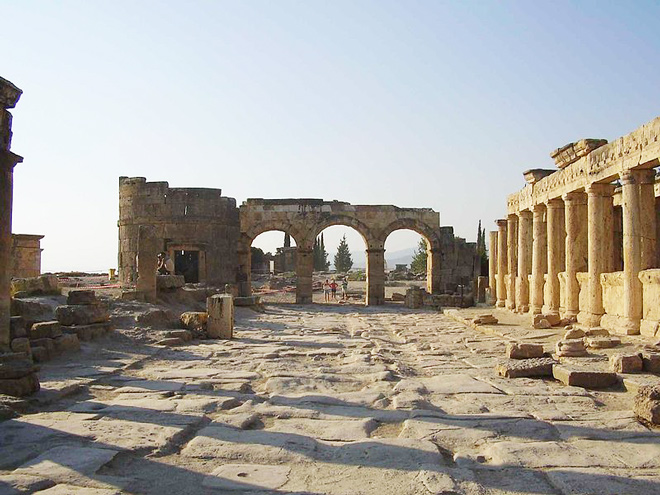
.
In Hellenistic times, the thermal springs at Hierapolis made the city a popular spa. Today, the ruins still draw visitors, who come to swim in its mineral-rich pools and to see the startling white travertine terraces of nearby Pamukkale.
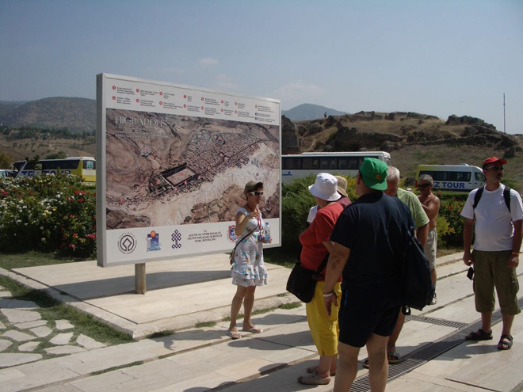
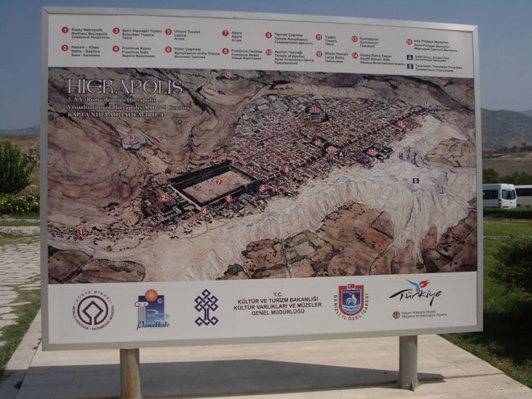
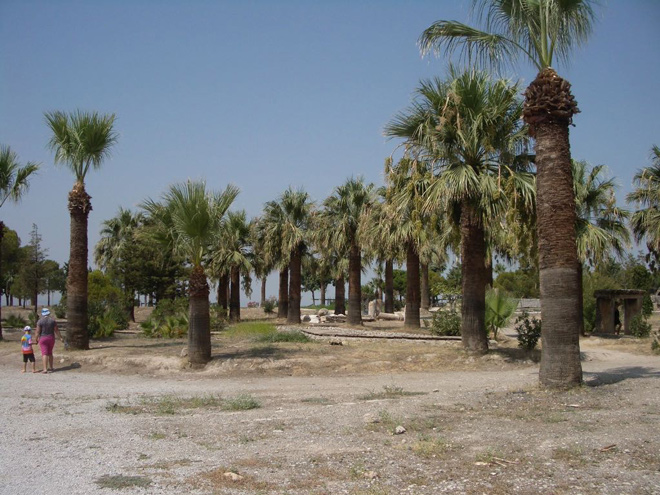
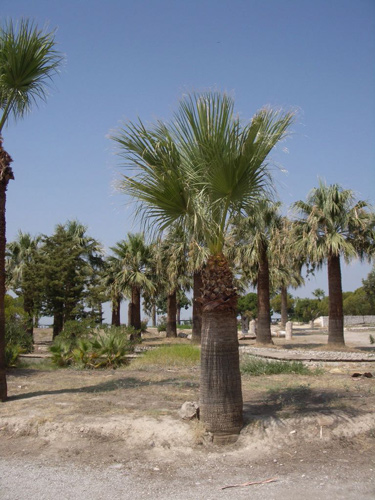
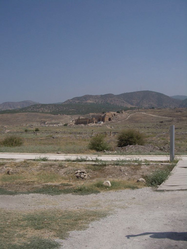
The site features a relatively well-preserved theatre (although only 30 rows of seats have survived). Built in 200BC, the theatre could seat 20,000 people.
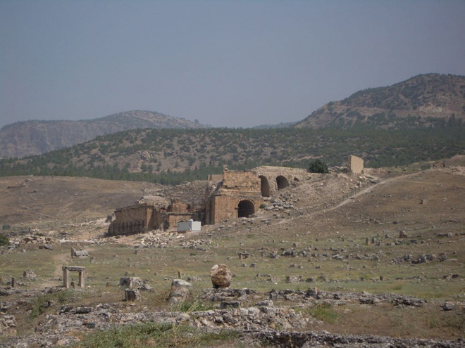
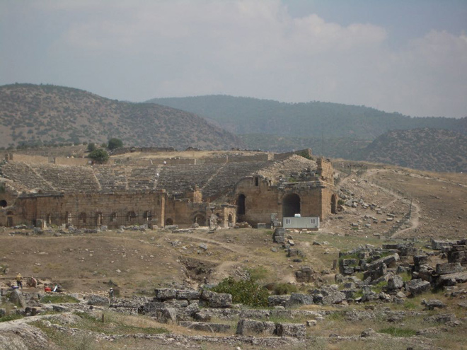
There is much reconstruction taking place on the site.
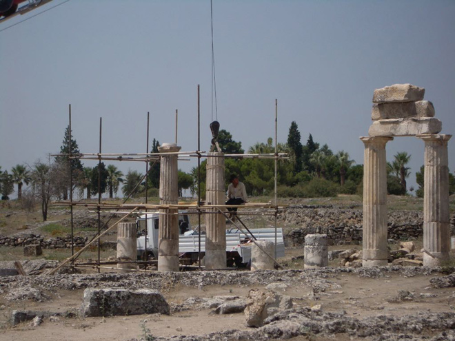
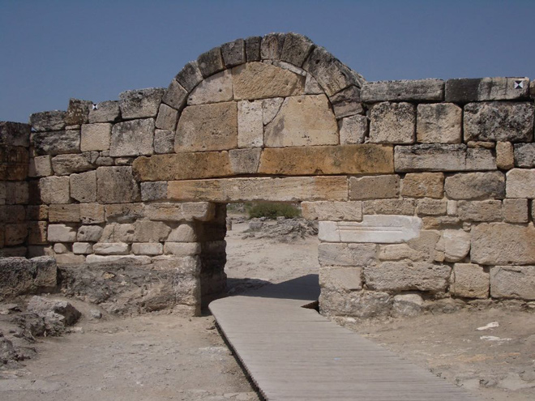
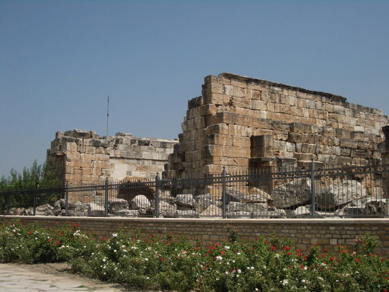
The Martyrium of St.Philip was built in the 5th century on the site where the apostle was crucified and stoned in AD 80.
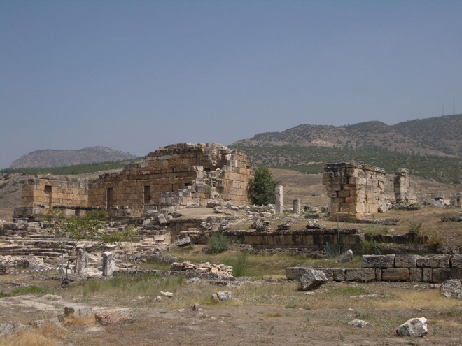
The popular bathing pool, littered with fragments of marble columns, may be the remains of a sacred pool associated with the Temple of Apollo.
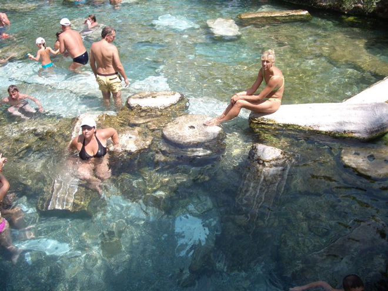
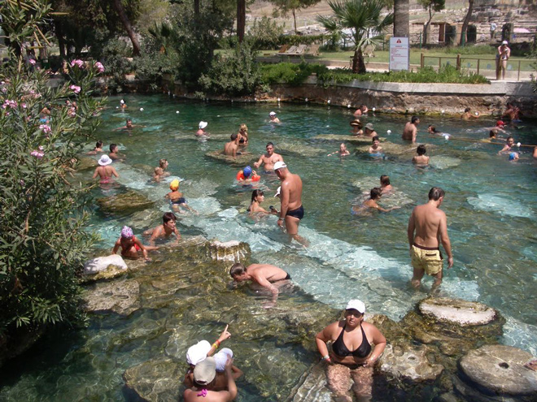
Architectural artifacts are strewn across the whole site which looks like a giant jigsaw awaiting assembly.
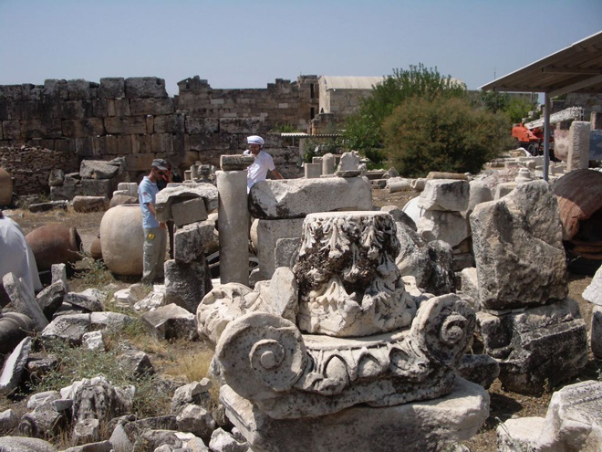
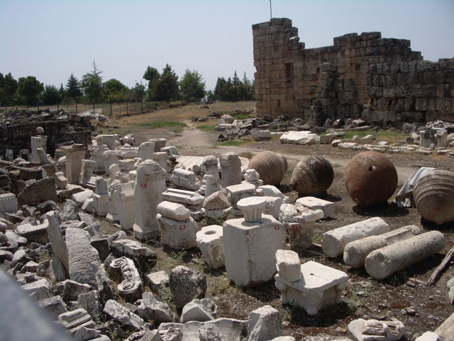
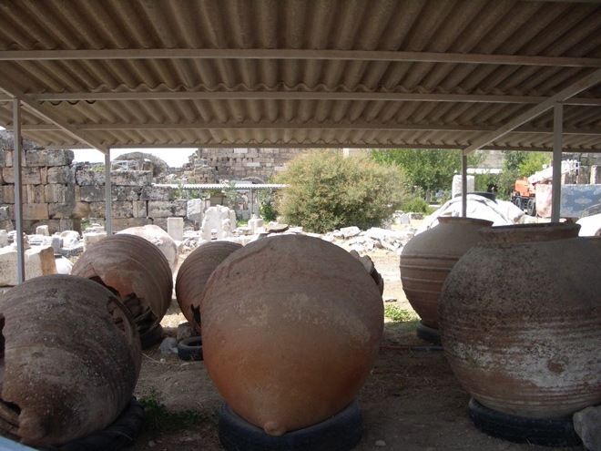
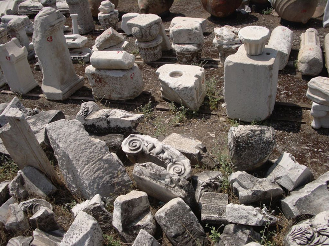
While we toured the complex, our buses were washed (they were very dusty from the roads) and then the drivers had a snooze in the airy luggage compartments beneath the passengers' seats in the shade.
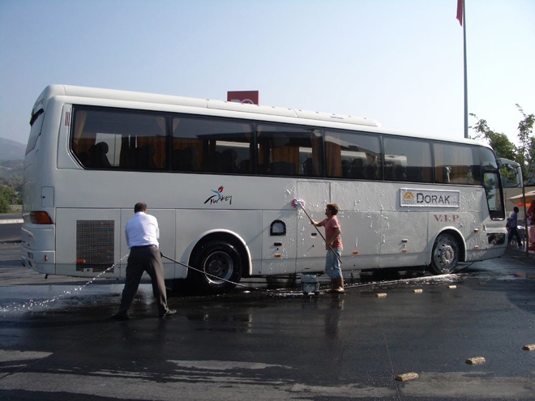
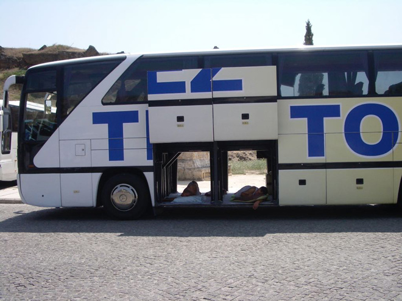
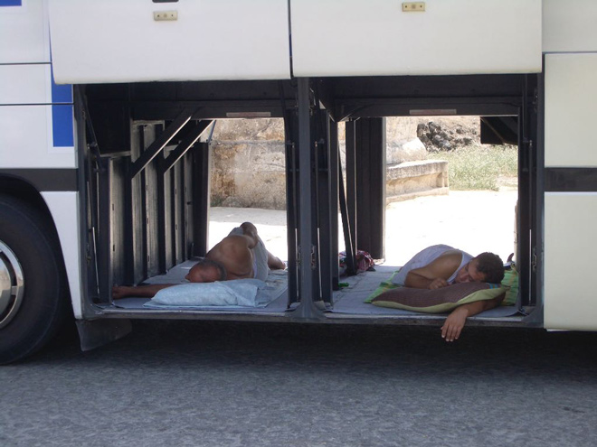